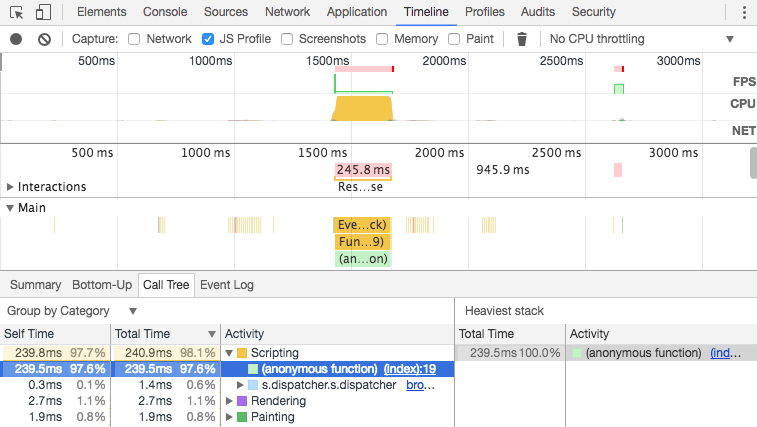
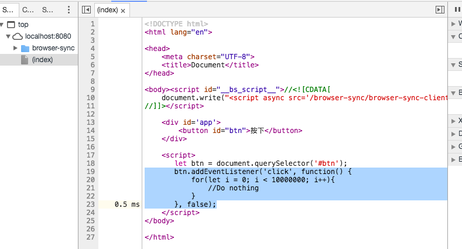

浅谈前端优化
你的期待？

不要优化
什么是前端优化
优化什么？
两手抓
- 工程优化
- 程序优化
为什么要工程优化
前端空前繁荣
问题是：内容太多，选择障碍？学习不能？
前端规模扩大
问题是：埋头就是干，工作效率低？各自为政，沟通不畅？
前端责任变重
问题是：页面仔，呵呵！
工程团队问题赏析
风格之争
function get( obj, key, defaultVal )
{
if(!obj)
{
return defaultVal
}
return obj[key] || defaultVal
}
VS
const get = function(obj, key, defaultVal) {
if (!obj) {
return defaultVal;
}
return obj[key] || defaultVal;
};
约定之争
const get = function(obj, key, defaultVal) {
let res;
if (obj) {
if (obj[key]) {
res = obj[key];
} else {
res = defaultVal;
}
} else {
res = defaultVal;
}
return res;
};
VS
const get = function(obj, key, defaultVal) {
if (!obj) {
return defaultVal;
}
return obj[key] || defaultVal;
};
Tab Space 之争
操作系统之争
OS X ?
Windows ?
Linux ?
然并卵
说破大天，也仅仅是不同人的喜好问题
但是。。。。
土匪 VS 三角洲
豆腐渣工程 VS 米兰大教堂
独乐乐 VS 众乐乐
花心大少 VS 负责到底
规矩是可靠团队的前提
统一代码风格
| 领域 | 工具 |
|---|---|
| JavaScript | ESLint, esformatter |
感受Linting
感受Formatting
不在无意义的事上花时间
打造高效率、高质量机动部队
你应该是这样的
工程化问题赏析
太多请求
不使用CDN
未合理利用缓存
无压缩
太多跳转
太多DOM操作
使用过度资源，例如：大图片缩小显示
减少请求
- 雪碧图、小图片转
base64 - CSS concatenation
- JS concatenation, bundling
利用CDN
压缩静态资源
- JavaScript minify
- CSS minify
- HTML minity
- 网络请求
gzip，详见nginx-gzip
不做无谓跳转
譬如：www.taobao.com/ => wwww.taobao.com
减少DOM操作
- 慎重思考大批量的DOM操作，详见：疯狂操作DOM
- 引入
virtual DOM工具
使用合适的资源
- 显示区域
70px * 70px，就别用什么高清图 - 只用个模版引擎，就别引入
angular.js - 只用栅栏布局，就别把
Bootstrap一整套都引入 - 只用个“退出”图标，就别把一整套
font-awesome引入
程序问题赏析
不使用严格模式
(function() {
userName = 'HanMeimei';
}());
console.log('userName', userName);//全局变量，居然能运行？
改成
'use strict';
(function() {
userName = 'HanMeimei';
}());
console.log('userName', userName);//ReferenceError
不用===
1 == '1'; // true
false == ' '; // true
true == [1]; // true
不清晰的表达式
if ((value.length === 4 || value.length === 5) && (Math.round(value) === parseInt(value))) {
//...
}
改成
const isZipCode = (value.length === 4 || value.length === 5) && (Math.round(value) === parseInt(value));
if (isZipCode) {
//...
}
执着使用for
var result = [];
for (var i = 0; i < homeIds.length; i++) {
for (var j = 0; j < data.length; j++) {
if (homeIds[i] == data[j].propertyId) {
result.push(data[j]);
}
}
}
改成
const result = data.filter(d => homeIds.includes(d.propertyId));
疯狂拼接字符串
var widgetStructure = '' +
'' + widgetTitle + '
' +
'' +
(function() {
var paras = '';
for (var i = 0; i < paraItems.length; ++i) {
paras += '' + paraItems[i] + '
';
}
return paras;
})() +
'' +
'';
试试模版工具吧
疯狂操作DOM
for (var i = 0; i < 100; ++i) {
ele.appendChild(document.createElement('div'));
}
要么改用fragment
const fragment = document.createDocumentFragment();
for (let i = 0; i < 100; ++i) {
fragment.appendChild(document.createElement('div'));
}
ele.appendChild(fragment);
要么改用试试virtual DOM工具
缺乏抽象
const putElephantInFridge = function () {
raiseArm();
holdFridgeDoor();
holdItTightly();
pullFridgeDoor();
while (doorAnglar > 90) { pullFridgeDoorBack(20); }
pushElephant();
while (cannotCloseDoor) {
riseFoot();
kickElephant();
tryCloseDoor();
}
};
改成
const putElephantInFridge = function () {
openFridgeDoor();
putElephant();
closeDoor();
};
滥用正则表达式
const reg = /a*(.*)*d.*/;
reg.test('24rih');// ~1ms
reg.test('24rih9jihsf6j');// ~20ms
reg.test('24rih9jihsf90uknjk8yzxc');// ~329ms
滥用闭包
for (let i = 0; i < 1000000; i++) {
const setupAlertTimeout = function() {
let msg = 'Message to alert';
setTimeout(function() {
let test = 'aaa' + msg;
}, 100);
};
setupAlertTimeout();
}//totally ~951ms
改成
const alertMsg = function() {
let msg = 'Message to alert';
let test = 'aaa' + msg;
};
for (let i = 0; i < 1000000; i++) {
const setupAlertTimeout = function() {
setTimeout(alertMsg, 100);
};
setupAlertTimeout();
}//totally ~441ms
优化(重构)之路漫漫其修远兮
选择合适的工具
提高开发效率
| 领域 | 工具 |
|---|---|
| JavaScript | Grunt, gulp, brunch | browserify, webpack, rollup |
| CSS | PostCSS | Less, Sass | Stylus |
| HTML | Liquid, EJS, pug |
利用常见的工具
发现问题所在
定位罪魁祸首
跟上时代
今天你的网站http2了么？
总结
优化不止是牛逼、吊诡的算法，还有软件工程里的规矩
好的软件应该时刻保持警惕，注意代码中的“bad smell”
高效团队应该打造 || 善用工具，而非“埋头就是干”
额外阅读
- ECMAScript 6 compatibility table
- 我眼中软件工程里的常识
- 优秀程序设计的18大原则